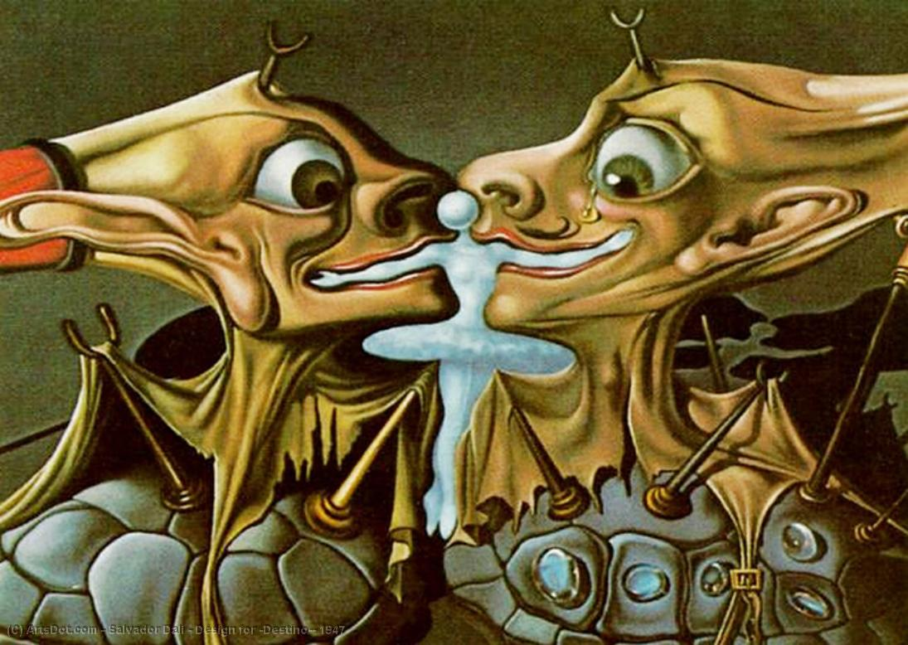
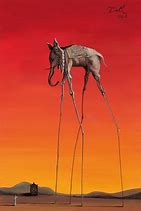
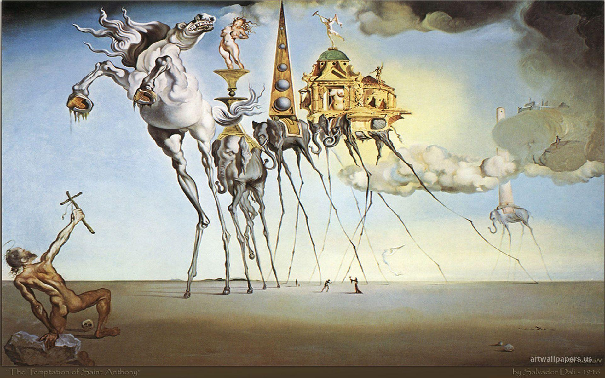
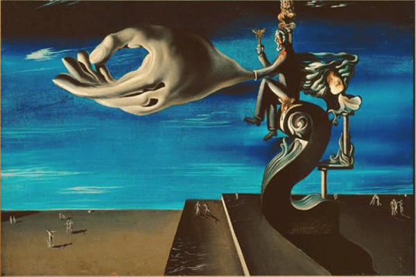
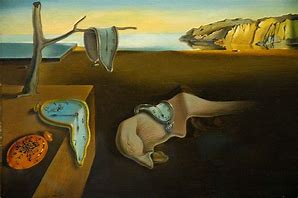
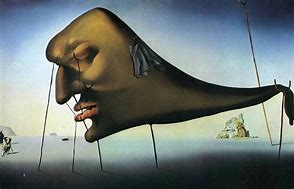

Dalí
Salvador Dalí, nato il 11 maggio 1904 a Figueras, in Catalogna, Spagna, è uno dei più importanti artisti del XX secolo. Oltre a essere un pittore, è stato scultore, scrittore, fotografo, cineasta, designer e sceneggiatore. Ecco un breve riassunto della sua vita e delle sue opere principali: Biografia: Figlio di un notaio, Dalí dimostrò fin da bambino doti eccezionali nel disegno. Studiò all’accademia di belle arti di Madrid e si legò a Federico García Lorca e Luis Buñuel. Nel 1926, compì il suo primo viaggio a Parigi, dove incontrò Picasso e si immerse nell’arte surrealista. Surrealismo: L’adesione al movimento surrealista portò a riconoscimento internazionale per Dalí. La sua tecnica di “paranoiac critical” gli permise di dipingere un mondo onirico in cui oggetti comuni si trasformano in modo bizzarro e irrazionale. Opere celebri: La persistenza della memoria (1931): Iconica per gli orologi molli che simboleggiano la perdita di consistenza e forza della memoria nel tempo. Coppia con le teste piene di nuvole: Un’immagine surreale di due figure con teste nuvolose. Metamorfosi di Narciso: Rappresenta la mitologica storia di Narciso. La tentazione di Sant’Antonio: Un’opera che esplora la lotta tra desideri e tentazioni. Eredità: Salvador Dalí è un’icona dell’arte, con un’impronta duratura sulla storia della pittura.
     